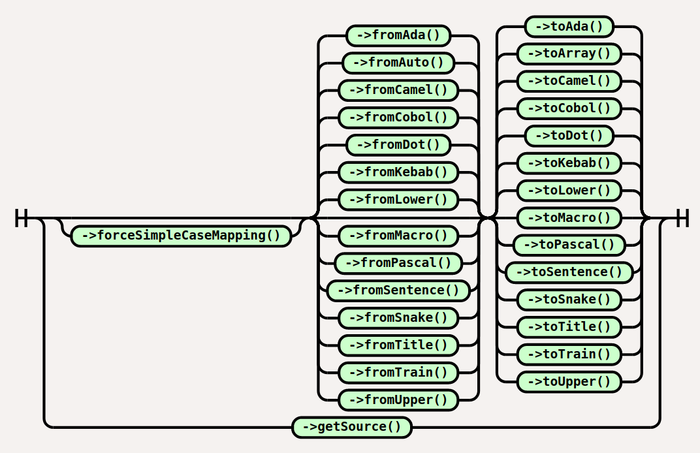

Case Converter
To use Case Converter you have to instantiate Convert class, to do so you
can use the new keyword or the CaseConverter factory class.
The string you want to convert should be passed at instantiation. This cannot be
changed later since Convert class is immutable.
$var = new Convert('string-to-convert');
Typically, you are going to call Convert methods this way:

Basic usage
Code:
use Jawira\CaseConverter\Convert;
$robot = new Convert('The-Terminator');
echo $robot->toPascal(); // TheTerminator
echo $robot->toCobol(); // THE-TERMINATOR
echo $robot->toSnake(); // the_terminator
Explicit case detection
In some edge cases you have to explicitly set the format of input string to have the desired output:
use Jawira\CaseConverter\Convert;
$agency = new Convert('FBI');
$agency->fromAda();
echo $agency->toCobol(); // FBI
echo $agency->toSnake(); // fbi
$agency->fromCamel();
echo $agency->toCobol(); // F-B-I
echo $agency->toSnake(); // f_b_i
$agency->fromAuto();
echo $agency->toCobol(); // FBI
echo $agency->toSnake(); // fbi
Force Simple Case-Mapping
You can still use Simple Case-Mapping even if you are using PHP 7.3 or newer:
<?php declare(strict_types=1);
require __DIR__ . '/vendor/autoload.php';
use Jawira\CaseConverter\Convert;
$robot = new Convert('Straße');
$robot->forceSimpleCaseMapping();
echo $robot->toMacro(); // output: STRAßE
Learn more about Case-Mapping.
Using the factory
CaseConverter factory is going to instantiate Convert class for you.
In the following code $this->cc is an instance of
\Jawira\CaseConverter\CaseConverter and implements
\Jawira\CaseConverter\CaseConverterInterface. This is useful because the
factory should be instantiated by the Dependency Injection mechanism provided
by your favorite framework.
// Convert string to Pascal case
$this->cc->convert('XML')->toPascal(); // Xml
// Convert string to Snake case
$this->cc->convert('v3.0.2')->toSnake(); // v3_0_2
// Convert string to Camel case
$this->cc->convert('first-name')->toCamel(); // firstName
// Convert from Lower case to Dot case
$this->cc->convert('non-SI units')->fromLower()->toDot(); // non-si.units
// Get detected words
$this->cc->convert('Mario Bros')->toArray(); // ['Mario', 'Bros']
// Retrieve original string
$this->cc->convert('use_the_force')->getSource(); // use_the_force
More about CaseConverter factory.